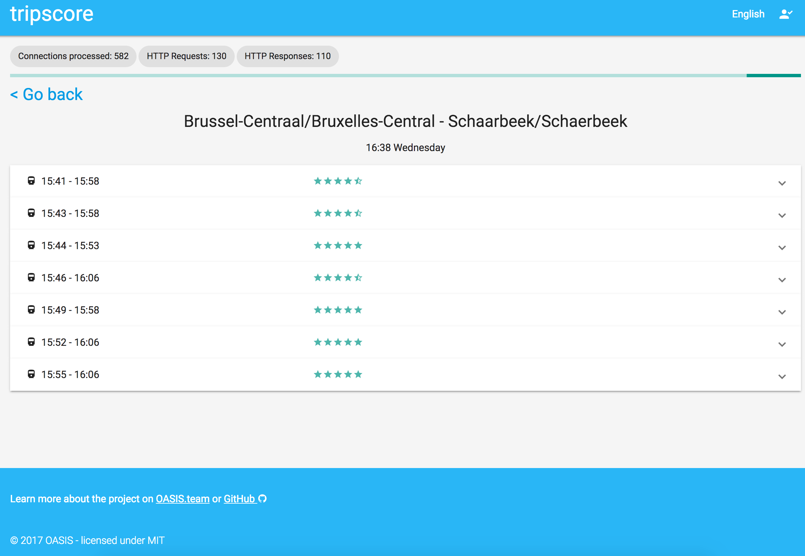
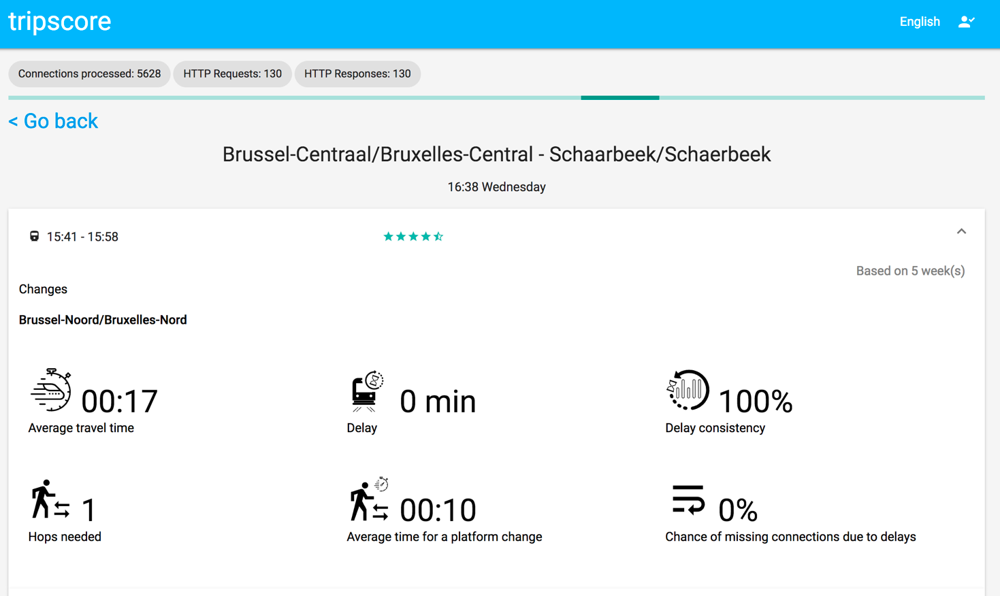

Time series – such as public transport time schedules and their actual departure times – may deliver insights about the public transport network to third parties. Today, however, public transport data is published in a way in which analytical processing is too expensive. In previous work, the Linked Connections(LC) framework was introduced as a cost-efficient publishing alternative to the de-facto GTFS standard and route planning APIs. We study whether this server interface can also be used by Linked Data agents to solve analytical queries over longer periods of time. In this work, we created a serverless Linked Data client in Javascript for the analysis of time series on top of public transport data sources, called tripscore.eu. In this example, it calculates the quality of experience for your journey for the last 5 weeks using the public transport agencies it can discover. We have made the code to this proof of concept available as open source in different reusable components. As the user-perceived performance is quite slow, we formulate opportunities to achieve better response times. We could, on the one hand, suggest the data publisher to publish summaries over longer periods of time. On the other hand, we could also, as reusers, create a private summary of the data on our server and expose this to our user agents. Still an open issue is how this client would discover new public transport agencies reliably, for which we started working on a metadata profile for transport datasets.
Different parties may want to get an insight in the performance of a public transport company. A commuter who makes the same trip for going to work every day, a transport company that wants to know if its trains are often delayed or a transport company worker that wants to know if he will arrive at home in time for dinner. These are only examples of what happens daily to all the people related with the public transport and their trust in its punctuality.
Since May 2017, one of the main motivation for developing solutions about multimodal travel information services is the publication of the new directive by the EU comission about discoverability and access to public transport data across Europe. This document proposes to make public transport data from providers available on national or common access points saved on databases, data warehouse or repositories. The main issue of this recommendation will be how to deal with the heterogeneity of access points and data formats and how to efficiently querying them.
In order to be able to provide reliable information about schedules and departure times of public transport, a good approach is based on the exploitation of time series and historical data. Currently, getting and processing these data from public transport companies is an expensive task. Common approaches for querying web data over long periods of time, like a SPARQL endpoint, are not efficient at the moment. In these approaches, the problem of the availability of the data and the process time of the server (Verborgh, Hartig, et al., 2014) are issues that the field has not resolve yet.
By applying the Linked Data Fragments (LDF) solution (Verborgh, Vander Sande, et al., 2014) to time series, on one hand, we solve the problem of saving historical data in a queryable way and, on the other hand, we move the server effort to the client which improves server availability. We also solve the problem of the heterogeneity transforming the data to the Linked Connections ontology.
In this paper we describe some related work about linked data and Linked Connections, and we present the demo tripscore, that analyzes historical and real data of means of transport and finally, we present some conclusions and future work lines.
One of the most well-known alternatives to publish data on the Web is Linked Data (Bizer, Heath, & Berners-Lee, 2009). Its principle is to publish documents with triples about specific entities and allow clients to query it through their entity URI. Even so, this approach has two main drawbacks. First, the querying performance is very low so many queries cannot be answered and second, the URI of an entity only points to the single document on the server that hosts the domain of that URI.
Also, the availability of SPARQL endpoints tends to be problematic when they are publicly available without restriction for many concurrent users. This is because the amount of required server resources increases quickly with extensive queries and more concurrent users. A solution to this problem is the use of Linked Data Fragments (Verborgh, Hartig, et al., 2014). The LDF is chosen as such that it requires few server resources (no extensive queries), clients are then able to further query the fragments themselves. This moves a lot of the working load off the servers and on to clients.
Linked Connections then combines the Linked Data Fragments with the Connection Scan Algorithm. The time series of connections used in CSA is split into many Linked Data Fragments. Now the algorithm can be executed on a client which queries the server for more fragments as needed (Colpaert et al., 2015). The main advantages of this approach are that significantly less server-side computing power is needed and a client can combine data from multiple datasets as desired. Because the calculations are done client-side the server also does not have to know your departure and destination locations or route so you are more in control of your privacy.
Tripscore application is an analytical tool that measures the quality of experience of public transport and pre-informs passengers in order to impact their travel behaviour and patterns. The goal of the application is to show the usefulness of publishing linked open public transport data for citizens and transport companies and agencies. Which in turn, motivates transport companies and agencies to publish their data following an open nature.
Currently, the application includes data from the National Belgium Rail (NMBS) and the Consorcio Regional de Transportes de Madrid (CRTM). For transforming these real-time and historical data we developed a server based on the Memento Framework (Van de Sompel et al., 2010) that takes the GTFS files from the companies and tranforms them to the Linked Connections ontology. After this transformation process, the application is able to query the data using HTTP interfaces as http://madrid.linkedconnections.org/crtm/connections and it calculates the summaries that will be exposed on the GUI.
The tripscore application can be viewed at http://tripscore.eu/. When visiting the page, a user can fill in their departure and arrival stop as well as the time of the trip and the day of the week. After confirming the travel data, the client starts querying for LDF pages with connections and processes them as they come in. The number of HTTP requests, responses and the amount of processed connections are shown while calculating results. Results are added to the list of routes as they are being calculated. Each result shows information about the trip such as the average travel time or the amount of hops needed. The punctuality of each route is calculated as well based on historic data. A trip’s score is given based on user preferences that can be modified in the preferences tab. In Figures 1 and 2 we show two screenshots about the application that was developed during the Open Summer of code 2017 event by OASIS students


The code of this demo is available at https://github.com/oSoc17/oasis-frontend under the MIT license. It reuses the open source LDFetch Linked Data client for NodeJS which was written specifically for the students at open Summer of code 2017.
The proof of concept works well for a specific day of the week and timespan (2 hours in our example), with historic data going back up to 5 weeks. Longer periods of time with more historic data would take longer and would become more difficult to use. The bottleneck being the large amount of HTTPS requests needed to fulfil queries. For extended use in the future we would use, private or public, summary documents of this data to reduce the amount of queries.
We are also currently working on the develpment of methods to deal with the heterogeneity of the data. We want to have methods for automatically transforming the main transport vocabularies to Linked Connections, like the one transforms GTFS to LC. Besides, today, we hard-coded the entry points to the Linked Connections datasets. However, we started work on a registry by extending DCAT-AP, with the OASIS team (https://oasis.team), to a Transport application profile to improve the discoverability of these datasets.
This work is partially supported by the CEF European project OASIS CEF-26696297
Thank you to our open Summer of code 2017 students: Jasper De Moor, Israel Ketema Elefenh, Robrecht Meersman, Bruno Haspeslagh and Pieter-Jan Vandenberghe
Bizer, C., Heath, T., & Berners-Lee, T. (2009). Linked data-the story so far. Semantic services, interoperability and web applications: emerging concepts, 205-227.
Colpaert, P., Llaves, A., Verborgh, R., Corcho, O., Mannens, E., and Van de Walle, R. (2015). Intermodal public transit routing using linked connections. In Villata, S., Pan, J. Z., and Dragoni, M., editors, Proceedings of the ISWC 2015 Posters & Demonstrations Track co-located with the 14th International Semantic Web Conference (ISWC-2015), volume 1486. CEUR-WS.org.
Van de Sompel, H., Sanderson, R., Nelson, M. L., Balakireva, L. L., Shankar, H., & Ainsworth, S. (2010). An HTTP-based versioning mechanism for linked data. arXiv preprint arXiv:1003.3661.
Verborgh, R., Hartig, O., De Meester, B., Haesendonck, G., De Vocht, L., Vander Sande, M., ... & Van de Walle, R. (2014, October). Querying datasets on the web with high availability. In International Semantic Web Conference (pp. 180-196). Springer, Cham.
Verborgh, R., Vander Sande, M., Colpaert, P., Coppens, S., Mannens, E., & Van de Walle, R. (2014, April). Web-Scale Querying through Linked Data Fragments. In LDOW.